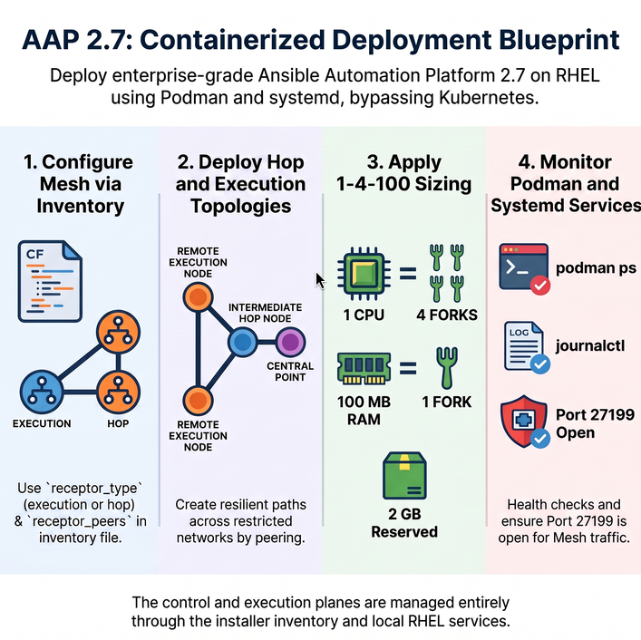

Advanced Deployment of Ansible Automation Platform 2.7 — Containerized
The containerized installation of Ansible Automation Platform 2.7 runs all AAP components as containers managed by systemd and podman on Red Hat Enterprise Linux hosts, without requiring a Kubernetes or OpenShift cluster. This chapter covers Automation Mesh configuration, capacity planning, and troubleshooting specific to containerized deployments.

Participants will acquire practical skills in:
-
Configuring Automation Mesh for a containerized AAP deployment using
receptor_typein the installer inventory. -
Designing and deploying hop and execution node topologies using inventory peering.
-
Calculating sizing requirements using the fork capacity model for RHEL-based containers.
-
Troubleshooting common containerized installation issues.